Stockholm, capital and largest city of Sweden. Stockholm is located at the junction of Lake Mälar
(Mälaren) and Salt Bay
(Saltsjön), an arm of the Baltic Sea, opposite the Gulf of Finland. The city is built upon
numerous islands as well as
the mainland of Uppland and Södermanland. By virtue of its location, Stockholm is regarded as
one of the most beautiful
capital cities in the world.
Stockholm was first mentioned as a town in 1252 and was largely built by the Swedish ruler Birger
Jarl. It grew rapidly
as a result of a trade agreement made with the German city of Lübeck. This agreement ensured
Lübeck merchants freedom
from customs charges for their trade in Sweden, as well as the right to settle there. The city
came to be officially
regarded as the Swedish capital in 1436. After conflicts between the Danes and Swedes for many
years, Stockholm was
liberated from Danish rule by Gustav I Vasa in 1523.
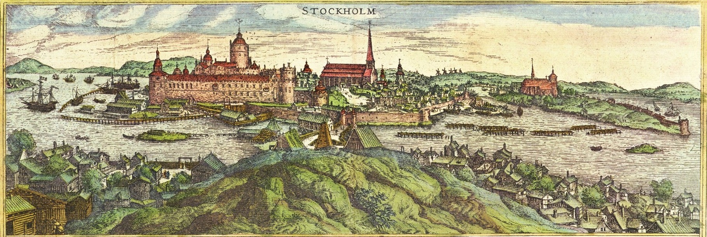
×
Stockholm XVth century
Stockholm developed rapidly in the mid-17th century as Sweden temporarily became a great power.
The
central government
departments were then placed there, and the city became an independent administrative unit. The
old
city walls were torn
down, and new districts grew up north and south of the “city between the bridges.” In the 18th
century, fires destroyed
large parts of the city, and stone buildings were constructed to replace the old wooden houses.
Stockholm had by then
become the cultural centre of Sweden; many of its literary societies and scientific academies
date
from this time.
A new period of development began with industrialization in the 19th century, and the
introduction of
municipally
organized cleaning (1859) and sanitation (1861) contributed to a rapid increase in population.
During this time
redevelopment took place in the medieval city nucleus, buildings were reconstructed, boulevards,
avenues, and parks were
laid out, and many of the city’s present-day schools, museums, libraries, and hospitals were
built.
Many suburbs and
satellite towns have subsequently developed.
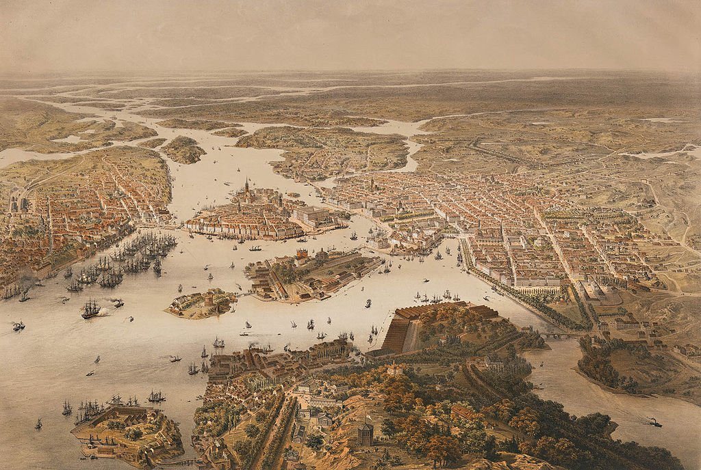
×
Gamla Stan
The original nucleus of the city is the “city between the bridges”—Gamla Stan (Old Town),
consisting of Stads Island,
Helgeands Island, and Riddar Island. The buildings in this area are mainly from the 16th and
17th centuries. This
well-preserved city nucleus, with the original network of streets and many of its buildings
dating from the Middle Ages,
is legally protected from change. Stads Island contains the Royal Palace; Storkyrkan, also
called the Cathedral, or
Church, of St. Nicolas; the German Church; the House of Lords; the government offices; the Stock
Exchange; and a number
of other notable buildings. Riddar Island is dominated by the Riddarholm Church. The House of
Parliament and the
National Bank are on Helgeands Island.
Stockholm is Sweden’s leading industrial area. Its major industries include metal and machine
manufacturing, paper and
printing, foodstuffs, and chemicals. It is also the country’s chief wholesale and retail centre
and serves as the
headquarters of many banks and insurance companies. Stockholm is also the second largest port in
Sweden (Göteborg being
the first). The national government’s many offices are a major employer in the city, as are
various educational,
scientific, and cultural institutions.
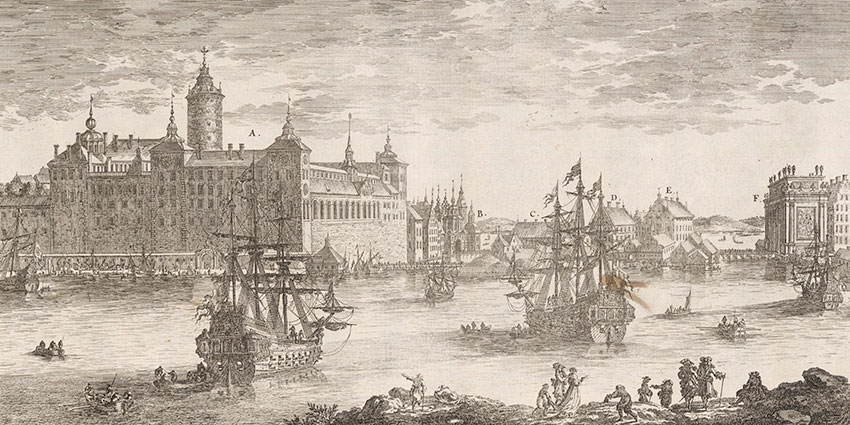
×
Royal Palace
Stockholm is the chief educational centre in Sweden and is home to Stockholm University (1877),
the Royal Institute of
Technology (1827), and the Caroline Medical Institute. The city’s leading cultural institutions
include the Royal
Theatre (the opera), the Concert Association (Stockholm Philharmonic Orchestra), and the Royal
Dramatic Theatre. In 1912
Stockholm hosted the Olympic Games.
Kings of Sweeden
XVII-XXI
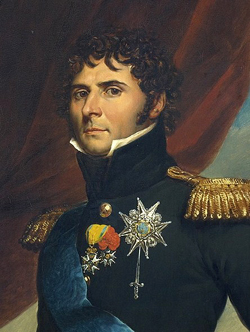
Charles XIV 5 February 1818 – 8 March 1844
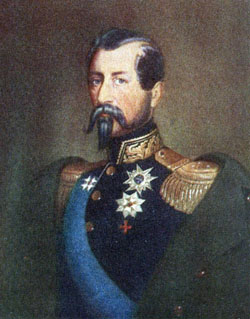
Oscar I 8 March 1844 – 8 July 1859
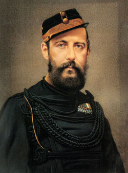
Charles XV (Karl XV) 8 July 1859 – 18 September 1872
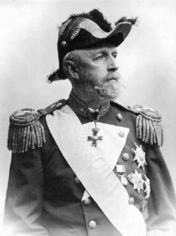
Oscar II 18 September 1872 – 8 December 1907
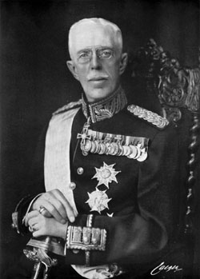
Gustaf V 8 December 1907 – 29 October 1950
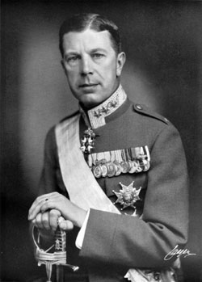
Gustaf VI 29 October 1950 – 15 September 1973
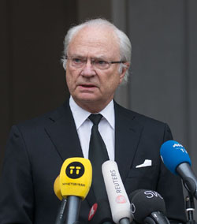
Carl XVI 15 September 1973 – present
❖ Modern Stockholm ❖
Stockholm is the capital
and most populous urban
area of Sweden as well as in Scandinavia. 975,904 people live in the municipality,
approximately 1.6 million in the
urban area, and 2.4 million in the metropolitan area. The city stretches across
fourteen islands where Lake
Mälaren flows into the Baltic Sea. Outside the city to the east, and along the coast, is the
island chain of the
Stockholm archipelago. The area has been settled since the Stone Age, in the 6th millennium
BC, and was founded as a
city in 1252 by Swedish statesman Birger Jarl. It is also the county seat of Stockholm
County.
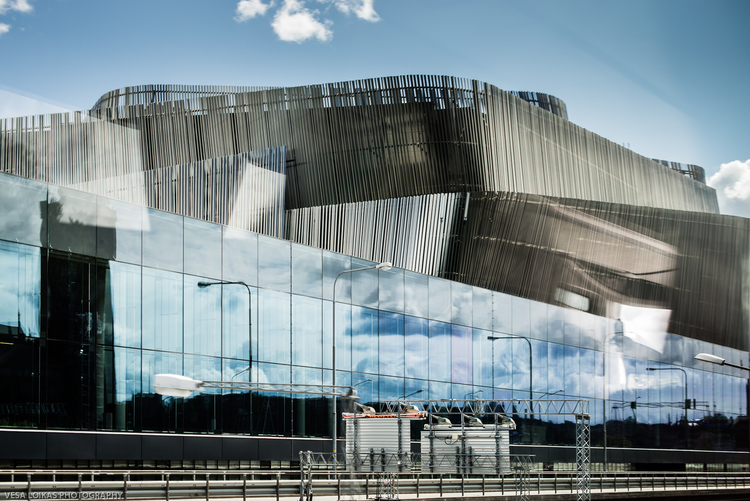
×
Conference center built in 2010
Stockholm is the cultural, media, political, and economic centre of Sweden. The Stockholm region
alone accounts for over
a third of the country's GDP, and is among the top 10 regions in Europe by GDP per
capita. Ranked as an alpha-
global city, it is the largest in Scandinavia and the main centre for corporate headquarters
in the Nordic
region. The city is home to some of Europe's top ranking universities, such as the Stockholm
School of Economics,
Karolinska Institute and KTH Royal Institute of Technology. It hosts the annual Nobel
Prize ceremonies and
banquet at the Stockholm Concert Hall and Stockholm City Hall. One of the city's most prized
museums, the Vasa Museum,
is the most visited non-art museum in Scandinavia. The Stockholm metro, opened in 1950,
is well known for the
decor of its stations; it has been called the longest art gallery in the world.
Sweden's national football
arena is located north of the city centre, in Solna. Ericsson Globe, the national indoor arena,
is in the southern part
of the city. The city was the host of the 1912 Summer Olympics, and hosted the equestrian
portion of the 1956 Summer
Olympics otherwise held in Melbourne, Victoria, Australia.
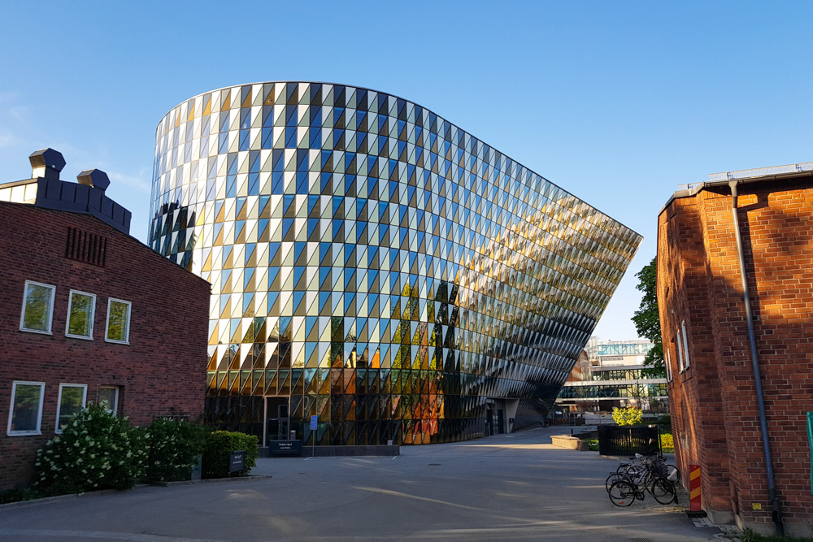
×
Karolinska Institute
The city-owned company Stokab started in 1994 to build a fiber-optic network throughout the
municipality as a level
playing field for all operators (City of Stockholm, 2011). Around a decade later, the network
was 1.2 million kilometres
(0.7 million miles) long making it the longest optic fiber network in the world and now has over
90 operators and 450
enterprises as customers. 2011 was the final year of a three-year project which brought fiber to
100% of public housing,
meaning an extra 95,000 houses were added. (City of Stockholm, 2011)
Apart from being Sweden's capital, Stockholm houses many national cultural institutions. The
Stockholm region is home to three of Sweden's World Heritage Sites – spots judged as
invaluable places that belong to all of humanity: The Drottningholm Palace, Skogskyrkogården
(The Woodland Cemetery) and Birka. In 1998, Stockholm was named European Capital
of Culture.
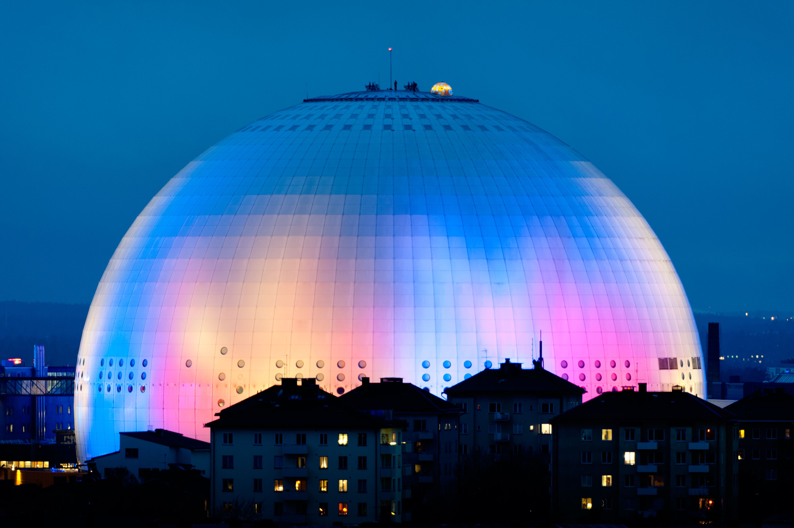
×
Globen Arena
Stockholm's architecture (along with Visby, Gotland) provided the inspiration for Japanese
anime director Hayao
Miyazaki as he sought to evoke an idealized city untouched by World War. His creation called
Koriko, draws directly from
what Miyazaki felt was Stockholm's sense of well-established architectural unity, vibrancy,
independence, and
safety.
Stockholm is the media centre of Sweden. It has four nationwide daily newspapers and is also the
central location of the
publicly funded radio (SR) and television (SVT). In addition, all other major television
channels have their base in
Stockholm, such as: TV3, TV4 and TV6. All major magazines are also located to Stockholm, as are
the largest literature
publisher, the Bonnier group. The world's best-selling video game Minecraft was created in
Stockholm by Markus 'Notch'
Persson in 2009, and its company Mojang is headquartered there.
Famous Swedes
modern
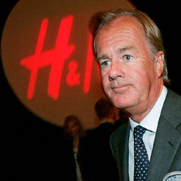
Erling Person H&M founder R.I.PIngvar Kamprad IKEA founder R.I.PGretta Tunberg environmental activist
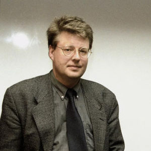
Stieg Larsson Writer Millennium trilogy Zlatan Ibrahimovich footballerPiew Die Pie most subscriebed youtuber
Avicci Dj, producer R.I.P